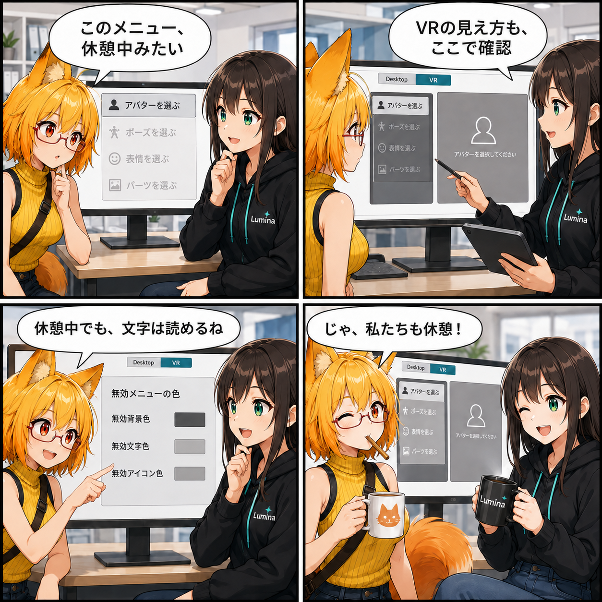

お休み中のメニューも、見やすく。DesktopとVRのテーマ確認をそろえた日
UIテーマの調整画面にDesktop / VRのプレビュー切替と、無効状態の色をまとめて編集する欄を追加しました。操作できる場所だけでなく、まだ操作できない場所の見え方も確認しやすくします。

操作できない項目にも、伝える役目がある
アバターをまだ選んでいないとき、基本設定・パーツ・表情・体形・ポーズ・アニメなどのメニューは操作できません。その状態を見分ける文字やアイコンの色は、画面の分かりやすさを支える要素です。今回の変更では、Unity Editorの「UIテーマ リアルタイム調整」に「アバター未選択時の無効メニュー」という専用欄を追加しました。
DesktopからVRへ、同じテーマで見比べる
画面プレビューをDesktopとVRで切り替えられるようになりました。VR側ではクイックメニューとメインパネル、選択中の項目や未選択時の無効項目を描画します。共通テーマを調整しながら、二つの画面構成で文字・アイコン・選択表示がどう見えるかを確認できます。
無効色を、探し回らずに調整する
専用欄には一般UIの無効背景、メニューを含む無効文字、無効アイコンの3項目を集約しました。Desktopのサイドメニューは無効時の背景を透明にするため、プレビューでは親パネルの色を背景に使います。単に全項目へ同じ灰色を塗るのではなく、表示先の違いも意識した確認です。
技術的なポイント
- UIThemeLiveEditorWindowにDesktop / VR切替を追加。
- colors.disabled、colors.disabledText、iconColors.disabledIconを専用欄へ集約し、一般の折りたたみ欄では重複表示を避ける。
- VRプレビューはテーマの文字サイズ・間隔・角丸・選択表示も参照する。
- コントラスト確認へ「無効文字 / 無効背景」の組合せを追加。
補足
これは開発用のUnity Editorウィンドウの改善です。実機のVR映像をそのまま表示する機能や、利用者向けの新しい実行時テーマ編集画面を追加した、という意味ではありません。コントラスト値の表示も自動的な読みやすさの保証ではなく、調整時の判断材料です。この日記ではコミット済みソースを確認し、Unity起動やVR実機での動作検証は行っていません。
4コマの裏話
最初の「休憩中」は、アバター未選択で操作できないメニューの比喩です。二つのプレビューと無効色を確認したあと、最後はろひが自分たちの休憩を宣言します。メニューを有効化する魔法ではなく、状態の見分けやすさを整える話にしました。
まとめ
DesktopとVRを切り替えながら、無効状態の文字やアイコンまでまとめて確認できるようになりました。押せるボタンの華やかさだけでなく、押せない理由が伝わる落ち着いた見え方も整えていきます。
本日のひとこと： メニューの休憩を整えたら、作り手もちょっと休憩。